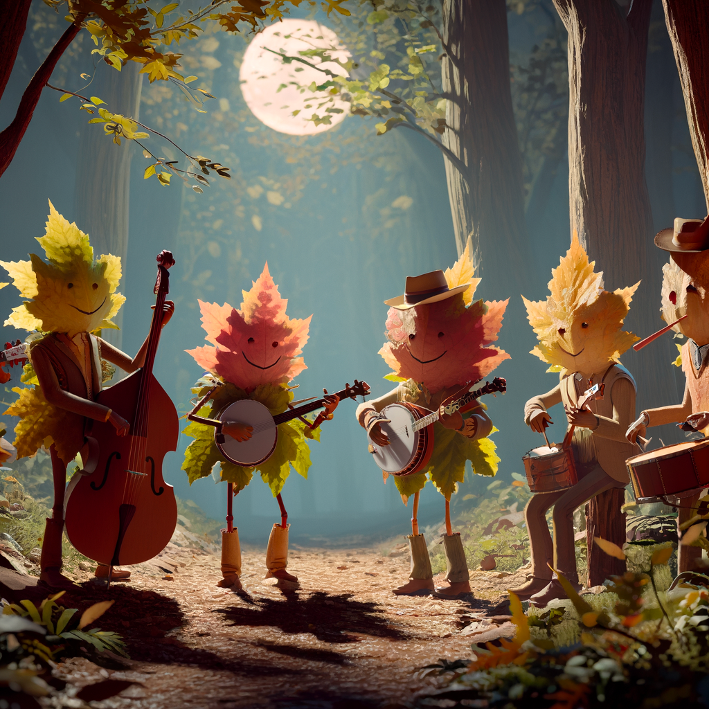
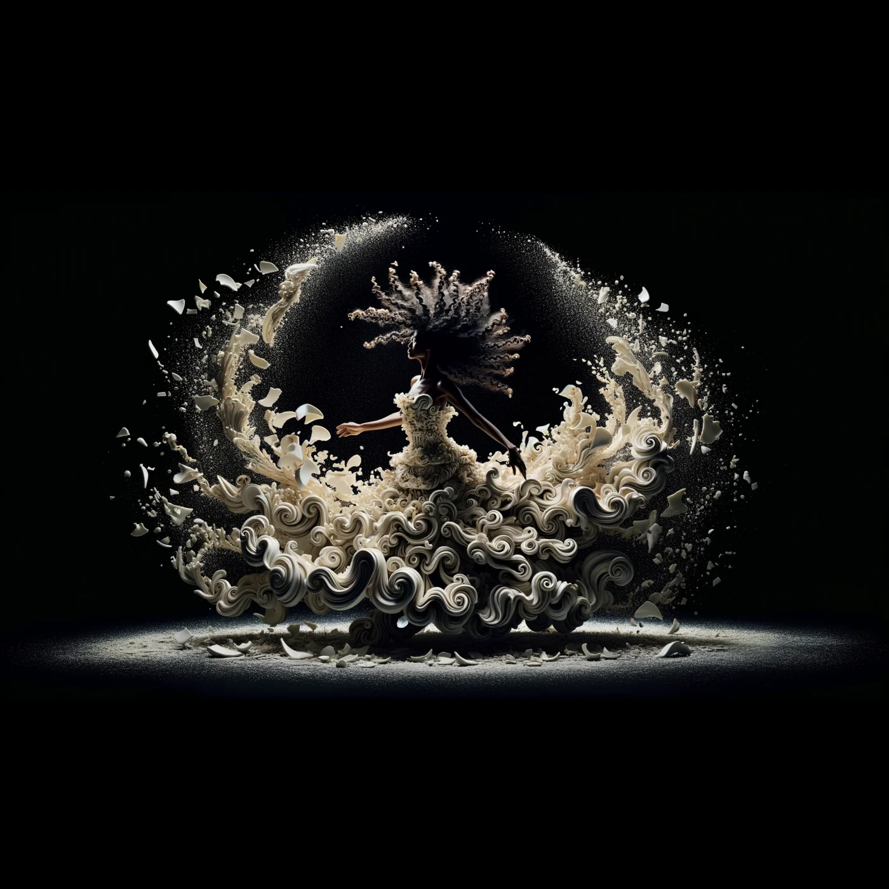
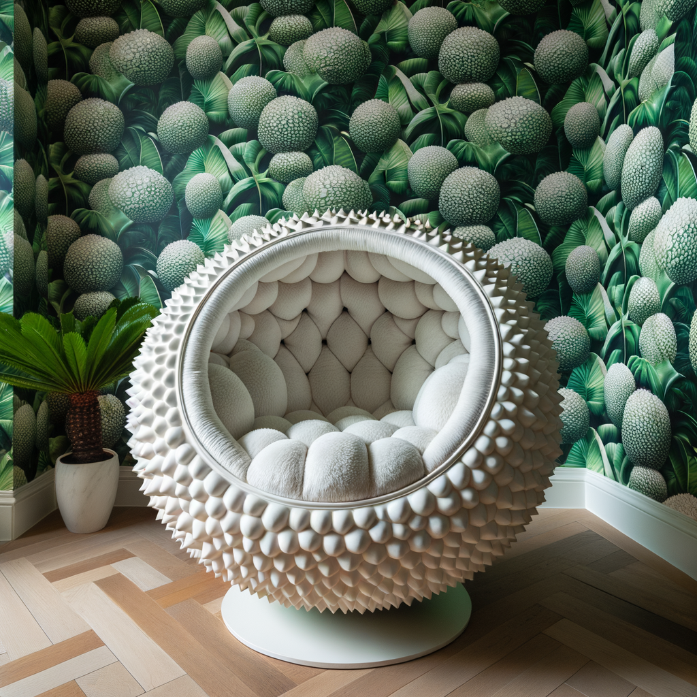
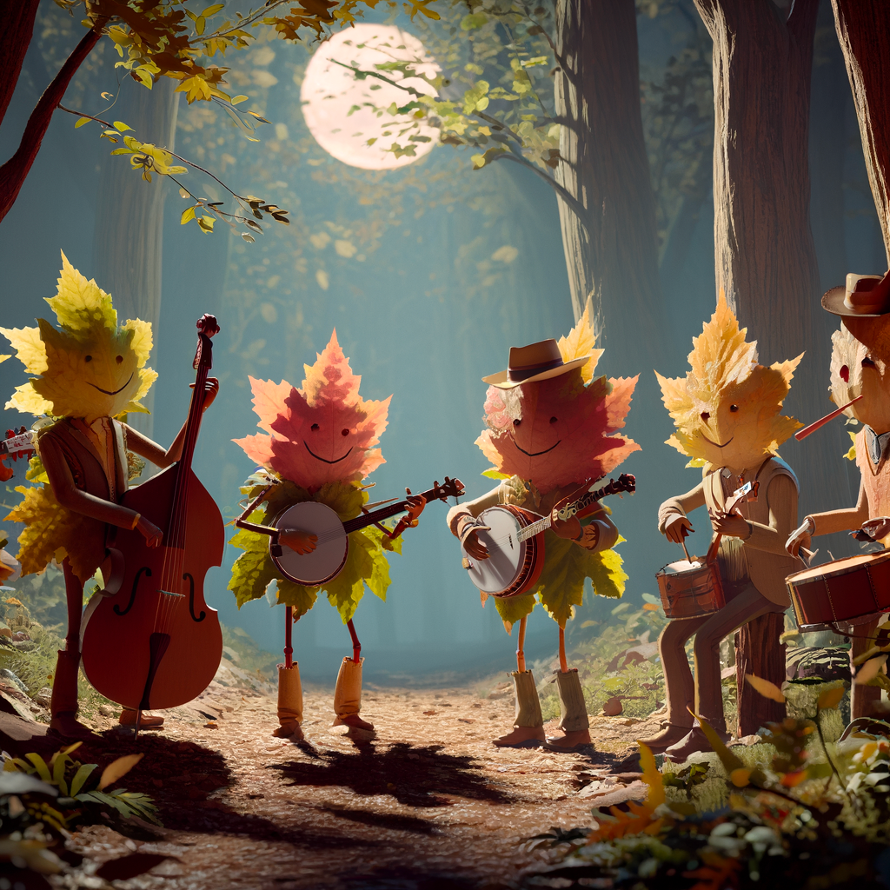
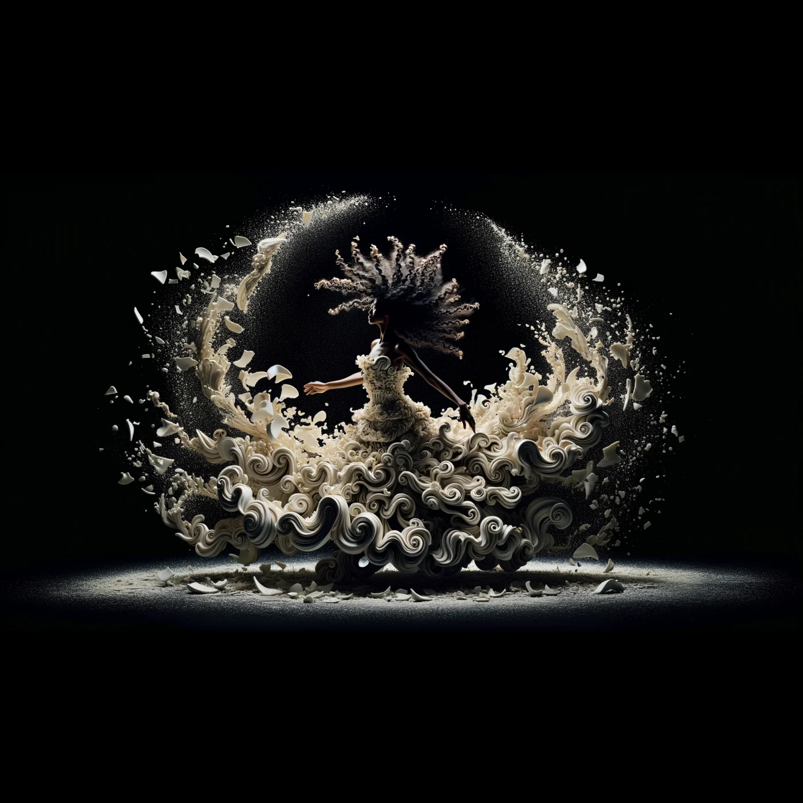
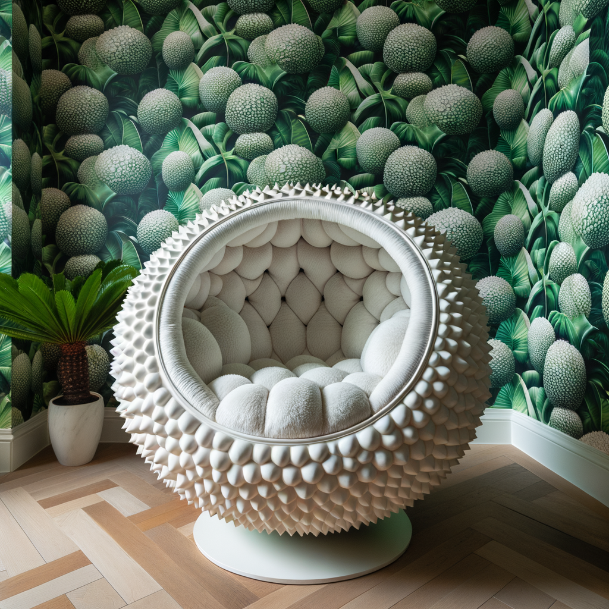
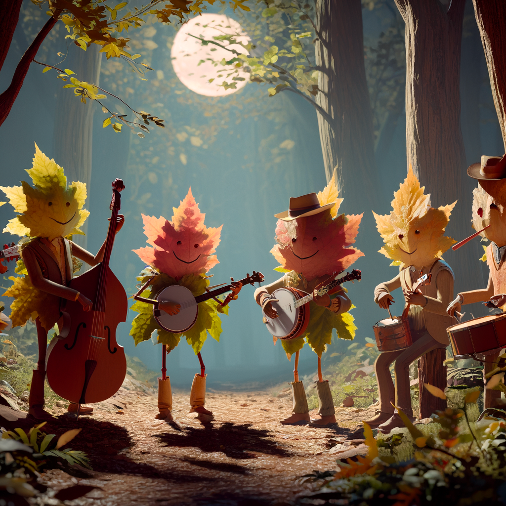
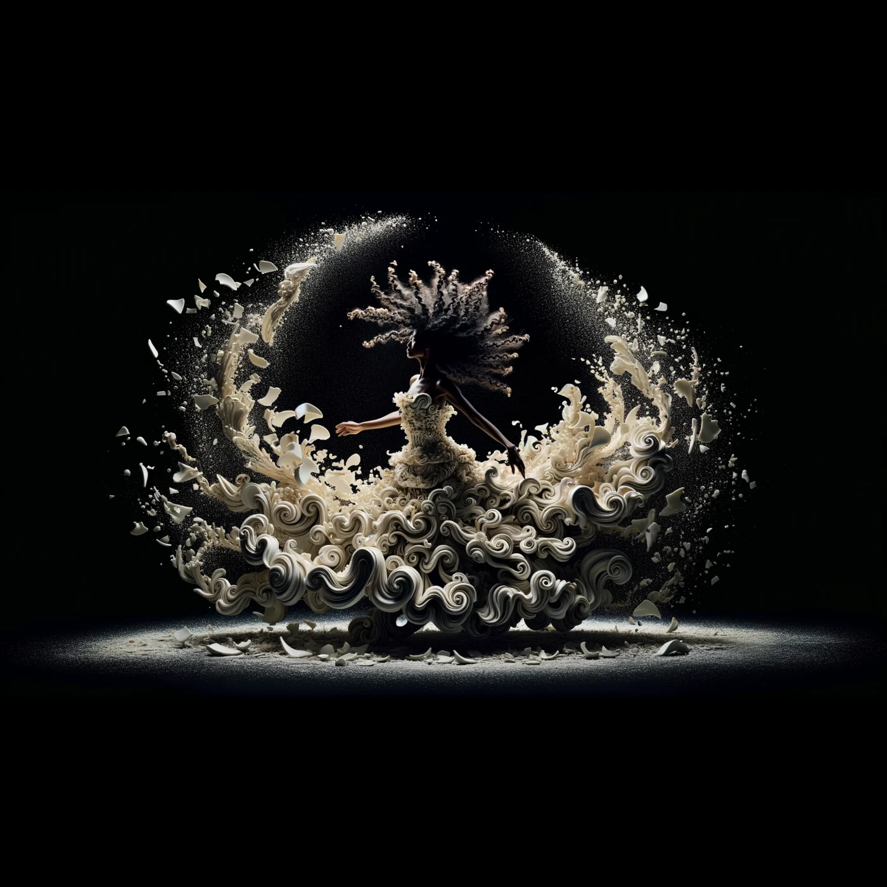
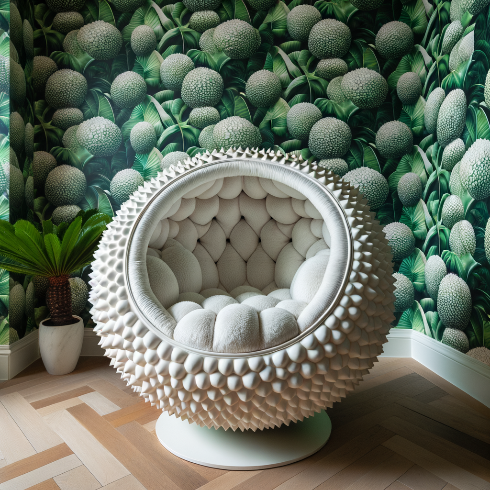

DALL·E 3 understands significantly more nuance and detail than our previous systems, allowing you to easily translate your ideas into exceptionally accurate images.



DALL·E 3 is now in research preview, and will be available to ChatGPT Plus and Enterprise customers in October, via the API and in Labs later this fall.
Modern text-to-image systems have a tendency to ignore words or descriptions, forcing users to learn prompt engineering. DALL·E 3 represents a leap forward in our ability to generate images that exactly adhere to the text you provide.
Even with the same prompt, DALL·E 3 delivers significant improvements over DALL·E 2.


DALL·E 3 is built natively on ChatGPT, which lets you use ChatGPT as a brainstorming partner and refiner of your prompts. Just ask ChatGPT what you want to see in anything from a simple sentence to a detailed paragraph.
When prompted with an idea, ChatGPT will automatically generate tailored, detailed prompts for DALL·E 3 that bring your idea to life. If you like a particular image, but it’s not quite right, you can ask ChatGPT to make tweaks with just a few words.
DALL·E 3 will be available to ChatGPT Plus and Enterprise customers in early October. As with DALL·E 2, the images you create with DALL·E 3 are yours to use and you don't need our permission to reprint, sell or merchandise them.
Like previous versions, we’ve taken steps to limit DALL·E 3’s ability to generate violent, adult, or hateful content.
DALL·E 3 has mitigations to decline requests that ask for a public figure by name. We improved safety performance in risk areas like generation of public figures and harmful biases related to visual over/under-representation, in partnership with red teamers—domain experts who stress-test the model—to help inform our risk assessment and mitigation efforts in areas like propaganda and misinformation.
We’re also researching the best ways to help people identify when an image was created with AI. We’re experimenting with a provenance classifier—a new internal tool that can help us identify whether or not an image was generated by DALL·E 3—and hope to use this tool to better understand the ways generated images might be used. We’ll share more soon.
DALL·E 3 is designed to decline requests that ask for an image in the style of a living artist. Creators can now also opt their images out from training of our future image generation models.